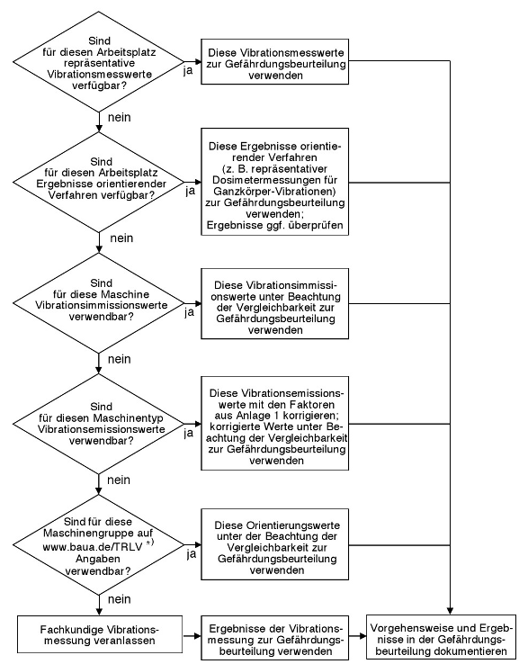

Zunächst ist zu ermitteln, ob Beschäftigte Tätigkeiten mit Vibrationsexposition durchführen, von denen Gefährdungen der Sicherheit oder der Gesundheit ausgehen können. Dabei werden in den nächsten Abschnitten vorrangig die unmittelbaren Gefährdungen betrachtet. Den mittelbaren Gefährdungen durch Vibrationen ist insbesondere der Abschnitt 6.6 gewidmet.
(1) Ganzkörper-Vibrationen spielen vor allem eine Rolle beim Fahren von Erdbaumaschinen, forst- und landwirtschaftlichen Fahrzeugen oder von Gabelstaplern auf unbefestigten oder holprigen Fahrbahnen. Unter den arbeitsbedingten Faktoren, die bandscheibenbedingte Erkrankungen der Lendenwirbelsäule mit verursachen und verschlimmern können, stellt die langjährige Einwirkung von Ganzkörper-Vibrationen im Sitzen eine besondere Gefahrenquelle dar. Stoßhaltige Belastungen können die Gesundheitsgefährdung erhöhen. Derartigen arbeitsbedingten Belastungen der Lendenwirbelsäule können insbesondere Fahrer von folgenden Fahrzeugen und fahrbaren Arbeitsmaschinen ausgesetzt sein:
(2) Vorstehende Aufzählung erhebt keinen Anspruch auf Vollständigkeit, die Reihenfolge erfolgt nicht nach der Höhe der Vibrationseinwirkung, und es werden teilweise branchenübliche und allgemeinverständliche Gerätebezeichnungen gewählt.
(1) Folgende Geräte und Maschinen oder Werkzeuge können zu einer die Sicherheit und die Gesundheit schädigenden Hand-Arm-Vibrationsexposition führen. Diese Liste erhebt keinen Anspruch auf Vollständigkeit, die Reihenfolge erfolgt nicht nach der Höhe der Vibrationseinwirkung, und es wurden teilweise branchenübliche und allgemeinverständliche Gerätebezeichnungen gewählt:
| Abbauhammer | Motorsense |
| Abrichthobelmaschine, Standgerät | Nadelentroster |
| Anklopfmaschine | Nager (auch Nibbler oder Knabber) |
| Aufbruchhammer | Nagler (Eintreibgerät) |
| Aufreißhammer | Nietgegenhalter |
| Balken-Motormäher | Niethammer |
| Betonschleifermaschine | Oberfräse |
| Blechschere | Oszillationsmesser (Vibrationsmesser) |
| Bodenfräse | Pendelschleifer |
| Bohrhämmer | Planieregge (Oberflächenabzieher) |
| Bolzensetzer | Poliermaschine |
| Bördelgerät | Radialschleifer |
| Dickenhobel (Abbundmaschine), Standgerät | Rasenmäher |
| Drehschrauber | Rostklopfer |
| Duo-Säge | Rührwerk |
| Elektrohammer | Säbelsäge |
| Elektromesser (pneumatische Messer) | Schaber |
| Erdbohrgerät | Schabotthammer |
| Exzenterschleifer | Schlagbohrmaschine |
| Feilen | Schlaghammer |
| Flächenreiniger | Schlagschrauber |
| Fräsmaschine | Schleifmaschine (Schleifbock), Standgerät |
| Freischneider | Schmiedezange |
| Fugenschleifer | Schnitzmaschine |
| Fugenschneider | Schweißkantenformer |
| Gelenkarmschleifmaschine (Ständer m. Bandarm) | Schwingschleifer |
| Geradschleifer | Spatenhammer |
| Gleisstopfer | Stampfer |
| Handbandschleifer | Stampframmen |
| Heckenschere | Steinsäge |
| Hefter | Stichsäge |
| Hobel | Stoßmesser (Schneidgeräte) |
| Hochdruckreiniger | Tacker |
| Hochentaster | Trennschleifer |
| Innenrüttler (Rüttelbohle) | Vertikalschleifer |
| Kernbohrmaschine (handgehaltene) | Vibrationsplatte |
| Kettensäge (Motorkettensäge) | Vibrationsstampfer |
| Knabbergerät | Vibrationswalze |
| Kombihammer | Winkelschleifer |
| Kopierfräse | |
| Kreissäge | |
| Laubbläser | |
| Mauernutfräse | |
| Meißelhammer | |
| Motorharke |
(2) Solche Geräte werden u. a. im Hoch- und Tiefbau, im Tunnelbau, in Steinbrüchen und bei der Steinbearbeitung, im Bergbau, in Kesselschmieden, Gussputzereien sowie im Schiffs- und Straßenbau verwendet. Für die "gleichartige Wirkung" ist es unerheblich, ob diese Geräte pneumatisch, elektrisch, hydraulisch oder durch Verbrennungsmotoren angetrieben werden. Dagegen ist für Arbeiten mit einfachen, handgeführten Hammer- und Meißelwerkzeugen nicht generell eine "gleichartige Wirkung" zu unterstellen.
Unter dem Aspekt der Vermeidung unnötiger Aufwände zur Vibrationsmessung ist die Rangfolge des Vorgehens bei der Auswahl geeigneter Informationsquellen in Abbildung 1 dargestellt. Für die Vergleichbarkeit von Expositionsangaben aus verschiedenen Informationsquellen mit den konkreten betrieblichen Arbeitsplätzen haben die Rahmenbedingungen, unter denen die Vibrationsangaben ermittelt wurden, besondere Bedeutung.
Für die Gefährdungsbeurteilung sind vorzugsweise im Betrieb bereits vorhandene Messwerte heranzuziehen, die an den Arbeitsmitteln und unter den konkret vorliegenden Bedingungen im Betrieb erhoben worden sind. Dabei haben die Ergebnisse fachkundiger Messungen Vorrang vor den Ergebnissen orientierender Verfahren, z. B. den Ergebnissen von einfachen Dosimetermessungen von Ganzkörper-Vibrationen.
Orientierende Verfahren sind z. B. Messungen mit einfachen Dosimetern an den vorhandenen Arbeitsmitteln und unter den konkret vorliegenden Bedingungen im Betrieb. Dabei sind unter Dosimetern vereinfachte Messgeräte zu verstehen, die aber den Anforderungen an Messeinrichtungen genügen, die in der TRLV Vibrationen, Teil 2 „Messung von Vibrationen“, beschrieben sind.
(1) Wenn Messwerte oder Ergebnisse orientierender Verfahren zu den zu beurteilenden Arbeitsplätzen nicht vorhanden sind, werden repräsentative Vibrationsmesswerte aus anderen Betrieben für die Gefährdungsbeurteilung herangezogen. Diese müssen an vergleichbaren Arbeitsmitteln und unter vergleichbaren Einsatzbedingungen erhoben worden sein. Dabei haben Daten zum gleichen Maschinentyp Vorrang vor Daten zu vergleichbaren Maschinentypen der gleichen Maschinenart. Nicht in jedem Fall stehen allerdings solche Immissionswerte aus der Praxis zur Verfügung oder können auf Anfrage vom Hersteller bereitgestellt werden.
(2) Derartige Werte sind auch aus Internet-Datenbanken mit Vibrationsmessergebnissen aus der Praxis und vergleichbaren, oft branchenspezifischen Publikationen der Arbeitgebervereinigungen, der Unfallversicherungsträger, der Arbeitsschutzbehörden oder anderer Institutionen zu entnehmen. Beispiele von Immissionswerten für Maschinentypen unter bestimmten Betriebsbedingungen sind auf der jährlich aktualisierten Internetseite der Bundesanstalt für Arbeitsschutz und Arbeitsmedizin (BAuA) http://www.baua.de/TRLV vorhanden. Ausschlaggebend für die Verwendung der Werte ist, ob die angegebenen Einsatz- und Betriebsbedingungen mit den Verhältnissen vor Ort vergleichbar sind.

*) siehe branchenbezogene Gefährdungstabellen bei Vibrationen
Abb. 1 Rangfolge des Vorgehens der Auswahl geeigneter Informationsquellen bei der Beurteilung der unmittelbaren Gefährdung durch Vibrationen
(1) Für die Beurteilung der Gefährdungen helfen auch die vorgeschriebenen Angaben des Herstellers zur Vibrationsemission aus der Dokumentation zur Maschine gemäß Produktsicherheitsgesetz (ProdSG) und Maschinenverordnung (9. ProdSV), z. B. aus der Betriebsanleitung. Wenn allerdings in den Maschinenunterlagen darüber hinaus Informationen zu den Vibrationen beim praktischen Einsatz enthalten sind, sollten bevorzugt diese Angaben herangezogen werden.
(2) Bei den Kennwerten zu Vibrationen in den Betriebsanleitungen handelt es sich, sofern nicht anders ausgewiesen, um Emissionswerte, die nach besonderen Vibrationsprüfvorschriften ermittelt wurden. Diese Prüfungen sind in den seltensten Fällen mit dem Einsatz der Maschinen in der Praxis vergleichbar. Deshalb können solche Emissionswerte nur mit entsprechenden Korrekturfaktoren für die Gefährdungsbeurteilung verwendet werden. Die Anlage 1 enthält derartige Korrekturfaktoren für Emissionswerte einer Reihe handgehaltener und handgeführter Maschinen. Es ist aber immer abzuwägen, ob diese Vibrationswerte in vernünftiger Weise auch für den zu beurteilenden praktischen Einsatz der Maschinen repräsentativ sind.
Orientierende Werte können der jährlich aktualisierten Internetseite der Bundesanstalt für Arbeitsschutz und Arbeitsmedizin (BAuA) http://www.baua.de/TRLV entnommen werden. Ausschlaggebend für die Verwendung der Werte ist, ob die angegebenen Einsatz- und Betriebsbedingungen mit den Verhältnissen vor Ort vergleichbar sind.
(1) Ergibt sich aus der Gefährdungsbeurteilung, dass Vibrationsminderungsmaßnahmen erforderlich sind, hat die Überprüfung der Einsatzmöglichkeit von alternativen vibrationslosen bzw. vibrationsarmen Arbeitsmitteln oder -verfahren Vorrang (z. B. Kernbohren statt Arbeiten mit dem Aufbruchhammer). Es ist zu prüfen, ob Arbeitsmittel, Ausrüstungen und Arbeitsverfahren mit einer geringeren gesundheitlichen Gefährdung, als die in Aussicht genommenen, verfügbar sind. Das Ergebnis der Substitutionsprüfung wird in der Dokumentation der Gefährdungsbeurteilung festgehalten.
(2) Informationen dazu sind in entsprechenden Richtlinien, Forschungsberichten, Informationsschriften und Beispielsammlungen zu finden.
(3) Bei der Abwägung der Alternativen ist aber zu berücksichtigen, dass nicht nur die Art und das Ausmaß der Vibrationen zählt, sondern auch die Gesamtdauer, die zur Erfüllung der Arbeitsaufgabe erforderlich ist. Insoweit ist zu berücksichtigen, dass eine leistungsärmere Maschine zwar eine geringere Augenblicksbelastung erzeugt, die Gesamtexpositionszeit jedoch oft so ansteigt, dass die Gesamtbelastung höher wird.
Beispiele für sinnvolle Substitutionsprüfung:
(4) Hierzu gehört aber auch z. B. die bessere Gestaltung von Gussteilen, wodurch beim Putzen weniger Nacharbeit durch Meißeln und Schleifen erforderlich ist. Sinnvoll ist ferner das Entkoppeln von Mensch und Maschine, bei Ganzkörper-Vibrationen durch ferngesteuerte Maschinen, z. B. Grabenwalzen, bei Hand-Arm-Vibrationen durch Abstützen von Abbauhämmern und schweren Bohrhämmern auf Lafetten und Fernsteuern des Vorschubes.
(1) Der Arbeitgeber hat bei der Gefährdungsbeurteilung die Erkenntnisse aus der arbeitsmedizinischen Vorsorge sowie allgemein zugängliche, veröffentlichte Informationen hierzu zu berücksichtigen.
(2) Der mit der arbeitsmedizinischen Vorsorge beauftragte Arzt berät den Arbeitgeber in Auswertung der arbeitsmedizinischen Vorsorge, insbesondere über Mitteilungen nach § 6 Absatz 4 ArbMedVV (siehe Abschnitt 5 Absatz 7 und 8). Diese Beratung erfolgt unter Einhaltung der ärztlichen Schweigepflicht.
(3) Über die Ergebnisse der Vorsorgeuntersuchungen im eigenen Unternehmen hinaus sollen auch andere Veröffentlichungen über Erkenntnisse aus arbeitsmedizinischen Untersuchungen Berücksichtigung finden. Dazu können z. B. Statistiken der Unfallversicherungsträger über Berufskrankheiten, Publikationen von Unternehmen der gleichen Branche oder ähnlicher Branchen und Beispiele guter Praxis gehören (Publikationen in Fachzeitschriften oder im Internet).